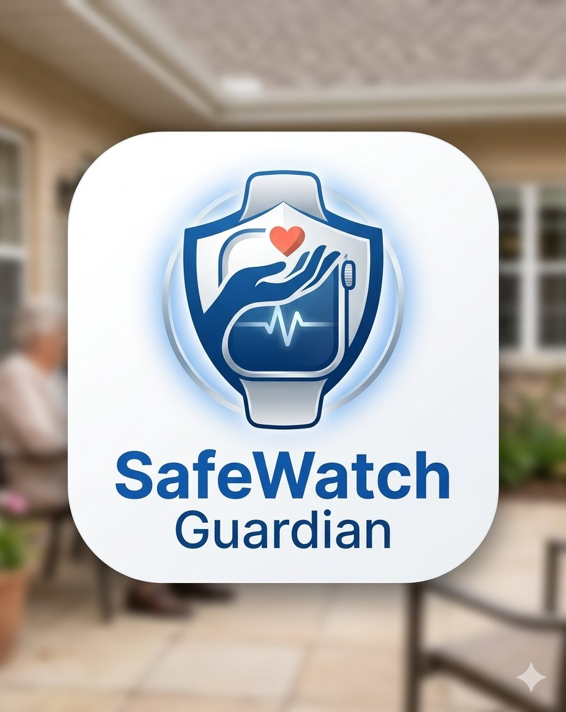

SafeWatch Monitoreo Activo
Paciente
Salir
Cámara en Vivo
Presiona
Iniciar Monitoreo
para activar la cámara
Estado Actual
Normal
Control
Iniciar Monitoreo
Detener
🧠 Detección de Pose
🎙️
¿Te encuentras bien?
Responde con tu voz – la IA está escuchando
Cargando modelo de voz…
O selecciona manualmente:
✅ Estoy bien
🚨 Necesito ayuda